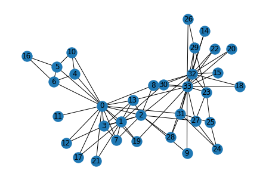
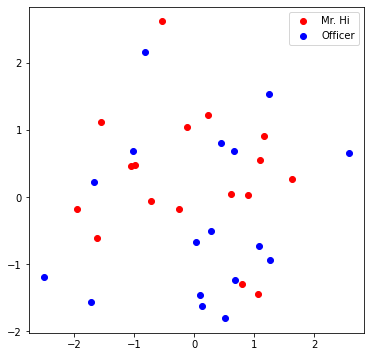

Graph Basics#
import networkx as nx
G = nx.karate_club_graph()
type(G) #undirected graph
networkx.classes.graph.Graph
import matplotlib.pyplot as plt
nx.draw(G , with_labels =True)

def average_degree(num_edges, num_nodes):
# TODO: Implement this function that takes number of edges
# and number of nodes, and returns the average node degree of
# the graph. Round the result to nearest integer (for example
# 3.3 will be rounded to 3 and 3.7 will be rounded to 4)
avg_degree = 0
############# Your code here ############
avg_degree = round(2 * num_edges / num_nodes)
#########################################
return avg_degree
num_edges = G.number_of_edges()
num_nodes = G.number_of_nodes()
avg_degree = average_degree(num_edges, num_nodes)
print("Average degree of karate club network is {}".format(avg_degree))
Average degree of karate club network is 5
import numpy as np
def average_clustering_coefficient(G):
# TODO: Implement this function that takes a nx.Graph
# and returns the average clustering coefficient. Round
# the result to 2 decimal places (for example 3.333 will
# be rounded to 3.33 and 3.7571 will be rounded to 3.76)
avg_cluster_coef = 0
############# Your code here ############
## Note:
## 1: Please use the appropriate NetworkX clustering function
avg_cluster_coef = round(np.array(list(nx.clustering(G).items())).sum(axis= 0)[1]/34 , 2)
#########################################
return avg_cluster_coef
avg_cluster_coef = average_clustering_coefficient(G)
print("Average clustering coefficient of karate club network is {}".format(avg_cluster_coef))
Average clustering coefficient of karate club network is 0.57
def one_iter_pagerank(G, beta, r0, node_id):
# TODO: Implement this function that takes a nx.Graph, beta, r0 and node id.
# The return value r1 is one interation PageRank value for the input node.
# Please round r1 to 2 decimal places.
r1 = 0
############# Your code here ############
## Note:
## 1: You should not use nx.pagerank
for neighbour in G.neighbors(node_id) :
r1 += beta*(r0 / G.degree[neighbour])
r1 += (1- beta)/G.number_of_nodes()
r1 = round(r1 , 2)
#########################################
return r1
beta = 0.8
r0 = 1 / G.number_of_nodes()
node = 0
r1 = one_iter_pagerank(G, beta, r0, node)
print("The PageRank value for node 0 after one iteration is {}".format(r1))
The PageRank value for node 0 after one iteration is 0.13
def closeness_centrality(G, node=5):
# TODO: Implement the function that calculates closeness centrality
# for a node in karate club network. G is the input karate club
# network and node is the node id in the graph. Please round the
# closeness centrality result to 2 decimal places.
closeness = 0
## Note:
## 1: You can use networkx closeness centrality function.
## 2: Notice that networkx closeness centrality returns the normalized
## closeness directly, which is different from the raw (unnormalized)
## one that we learned in the lecture.
closeness = nx.closeness_centrality(G, u=node)
closeness /= len(nx.node_connected_component(G, node)) - 1
closeness = round(closeness, 2)
#########################################
return closeness
node = 0
closeness = closeness_centrality(G, node=node)
print("The node 5 has closeness centrality {}".format(closeness))
The node 5 has closeness centrality 0.02
Working with Tensors#
import torch
print(torch.__version__)
1.12.0+cu116
torch.cuda.is_available()
True
torch.cuda.device_count()
1
torch.cuda.current_device()
0
torch.cuda.device(0)
<torch.cuda.device at 0x2a0d7e90eb0>
# Generate 3 x 4 tensor with all ones
ones = torch.ones(3, 4)
print(ones)
# Generate 3 x 4 tensor with all zeros
zeros = torch.zeros(3, 4)
print(zeros)
# Generate 3 x 4 tensor with random values on the interval [0, 1)
random_tensor = torch.rand(3, 4)
print(random_tensor)
# Get the shape of the tensor
print(ones.shape)
tensor([[1., 1., 1., 1.],
[1., 1., 1., 1.],
[1., 1., 1., 1.]])
tensor([[0., 0., 0., 0.],
[0., 0., 0., 0.],
[0., 0., 0., 0.]])
tensor([[0.8980, 0.1276, 0.8574, 0.0224],
[0.5229, 0.4742, 0.7780, 0.4857],
[0.3267, 0.3044, 0.6042, 0.0960]])
torch.Size([3, 4])
zeros = torch.zeros(3, 4, dtype=torch.float32)
print(zeros.dtype)
# Change the tensor dtype to 64-bit integer
zeros = zeros.type(torch.long)
print(zeros.dtype)
torch.float32
torch.int64
def graph_to_edge_list(G):
# TODO: Implement the function that returns the edge list of
# an nx.Graph. The returned edge_list should be a list of tuples
# where each tuple is a tuple representing an edge connected
# by two nodes.
edge_list = []
############# Your code here ############
edge_list = nx.edges(G)
#########################################
return edge_list
def edge_list_to_tensor(edge_list):
# TODO: Implement the function that transforms the edge_list to
# tensor. The input edge_list is a list of tuples and the resulting
# tensor should have the shape [2 x len(edge_list)].
############# Your code here ############
edge_index = torch.tensor(np.array(list(edge_list))).T
#########################################
return edge_index
pos_edge_list = graph_to_edge_list(G)
pos_edge_index = edge_list_to_tensor(pos_edge_list)
print("The pos_edge_index tensor has shape {}".format(pos_edge_index.shape))
print("The pos_edge_index tensor has sum value {}".format(torch.sum(pos_edge_index)))
The pos_edge_index tensor has shape torch.Size([2, 78])
The pos_edge_index tensor has sum value 2535
import random
def sample_negative_edges(G, num_neg_samples):
# TODO: Implement the function that returns a list of negative edges.
# The number of sampled negative edges is num_neg_samples. You do not
# need to consider the corner case when the number of possible negative edges
# is less than num_neg_samples. It should be ok as long as your implementation
# works on the karate club network. In this implementation, self loops should
# not be considered as either a positive or negative edge. Also, notice that
# the karate club network is an undirected graph, if (0, 1) is a positive
# edge, do you think (1, 0) can be a negative one?
neg_edge_list = []
############# Your code here ############
pos_edge_list = graph_to_edge_list(G)
for node1 in G.nodes():
for node2 in G.nodes():
if node1 < node2:
if (node1, node2) not in pos_edge_list:
neg_edge_list.append((node1, node2))
neg_edge_list = random.sample(neg_edge_list, num_neg_samples)
#########################################
return neg_edge_list
# Sample 78 negative edges
neg_edge_list = sample_negative_edges(G, len(pos_edge_list))
# Transform the negative edge list to tensor
neg_edge_index = edge_list_to_tensor(neg_edge_list)
print("The neg_edge_index tensor has shape {}".format(neg_edge_index.shape))
# Which of following edges can be negative ones?
edge_1 = (7, 1)
edge_2 = (1, 33)
edge_3 = (33, 22)
edge_4 = (0, 4)
edge_5 = (4, 2)
############# Your code here ############
## Note:
## 1: For each of the 5 edges, print whether it can be negative edge
pos_edge_list = graph_to_edge_list(G)
for edge in [edge_1, edge_2, edge_3, edge_4, edge_5]:
if edge in pos_edge_list:
print("No")
else:
print("Yes")
#########################################
The neg_edge_index tensor has shape torch.Size([2, 78])
No
Yes
No
No
Yes
Node Embedding Learning#
import torch
import torch.nn as nn
import matplotlib.pyplot as plt
from sklearn.decomposition import PCA
print(torch.__version__)
<frozen importlib._bootstrap>:228: RuntimeWarning: scipy._lib.messagestream.MessageStream size changed, may indicate binary incompatibility. Expected 56 from C header, got 64 from PyObject
1.12.0+cu116
# Initialize an embedding layer
# Suppose we want to have embedding for 4 items (e.g., nodes)
# Each item is represented with 8 dimensional vector
emb_sample = nn.Embedding(num_embeddings=4, embedding_dim=8)
print('Sample embedding layer: {}'.format(emb_sample))
Sample embedding layer: Embedding(4, 8)
# Select an embedding in emb_sample
id = torch.LongTensor([1])
print(emb_sample(id))
# Select multiple embeddings
ids = torch.LongTensor([1, 3])
print(emb_sample(ids))
# Get the shape of the embedding weight matrix
shape = emb_sample.weight.data.shape
print(shape)
# Overwrite the weight to tensor with all ones
emb_sample.weight.data = torch.ones(shape)
# Let's check if the emb is indeed initilized
ids = torch.LongTensor([0,1,2, 3])
print(emb_sample(ids))
tensor([[ 0.8214, -0.6340, -0.5403, -0.9771, 0.5627, -0.6153, -1.9443, -0.2390]],
grad_fn=<EmbeddingBackward0>)
tensor([[ 0.8214, -0.6340, -0.5403, -0.9771, 0.5627, -0.6153, -1.9443, -0.2390],
[-0.4970, 0.7978, 0.1936, 0.1587, -0.3720, -0.1713, -0.0838, 1.3219]],
grad_fn=<EmbeddingBackward0>)
torch.Size([4, 8])
tensor([[1., 1., 1., 1., 1., 1., 1., 1.],
[1., 1., 1., 1., 1., 1., 1., 1.],
[1., 1., 1., 1., 1., 1., 1., 1.],
[1., 1., 1., 1., 1., 1., 1., 1.]], grad_fn=<EmbeddingBackward0>)
# Please do not change / reset the random seed
torch.manual_seed(1)
def create_node_emb(num_node=34, embedding_dim=16):
# TODO: Implement this function that will create the node embedding matrix.
# A torch.nn.Embedding layer will be returned. You do not need to change
# the values of num_node and embedding_dim. The weight matrix of returned
# layer should be initialized under uniform distribution.
emb = None
############# Your code here ############
emb = nn.Embedding(num_embeddings=num_node, embedding_dim=embedding_dim)
emb.weight.data = torch.rand(num_node,embedding_dim)
#########################################
return emb
emb = create_node_emb()
ids = torch.LongTensor([0, 3])
# Print the embedding layer
print("Embedding: {}".format(emb))
# An example that gets the embeddings for node 0 and 3
print(emb(ids))
Embedding: Embedding(34, 16)
tensor([[0.2114, 0.7335, 0.1433, 0.9647, 0.2933, 0.7951, 0.5170, 0.2801, 0.8339,
0.1185, 0.2355, 0.5599, 0.8966, 0.2858, 0.1955, 0.1808],
[0.7486, 0.6546, 0.3843, 0.9820, 0.6012, 0.3710, 0.4929, 0.9915, 0.8358,
0.4629, 0.9902, 0.7196, 0.2338, 0.0450, 0.7906, 0.9689]],
grad_fn=<EmbeddingBackward0>)
def visualize_emb(emb):
X = emb.weight.data.numpy()
pca = PCA(n_components=4)
components = pca.fit_transform(X)
plt.figure(figsize=(6, 6))
club1_x = []
club1_y = []
club2_x = []
club2_y = []
for node in G.nodes(data=True):
if node[1]['club'] == 'Mr. Hi':
club1_x.append(components[node[0]][2])
club1_y.append(components[node[0]][3])
else:
club2_x.append(components[node[0]][2])
club2_y.append(components[node[0]][3])
plt.scatter(club1_x, club1_y, color="red", label="Mr. Hi")
plt.scatter(club2_x, club2_y, color="blue", label="Officer")
plt.legend()
plt.show()
# Visualize the initial random embeddding
visualize_emb(emb)

from torch.optim import SGD
import torch.nn as nn
def accuracy(pred, label):
# TODO: Implement the accuracy function. This function takes the
# pred tensor (the resulting tensor after sigmoid) and the label
# tensor (torch.LongTensor). Predicted value greater than 0.5 will
# be classified as label 1. Else it will be classified as label 0.
# The returned accuracy should be rounded to 4 decimal places.
# For example, accuracy 0.82956 will be rounded to 0.8296.
accu = 0.0
############# Your code here ############
accu = round(np.sum(np.array(label) == pred)/len(pred) , 4)
#########################################
return accu
def train(emb, loss_fn, sigmoid, train_label, train_edge):
# TODO: Train the embedding layer here. You can also change epochs and
# learning rate. In general, you need to implement:
# (1) Get the embeddings of the nodes in train_edge
# (2) Dot product the embeddings between each node pair
# (3) Feed the dot product result into sigmoid
# (4) Feed the sigmoid output into the loss_fn
# (5) Print both loss and accuracy of each epoch
# (6) Update the embeddings using the loss and optimizer
# (as a sanity check, the loss should decrease during training)
epochs = 500
learning_rate = 0.1
optimizer = SGD(emb.parameters(), lr=learning_rate, momentum=0.9)
for i in range(epochs):
optimizer.zero_grad()
node_emb = emb(train_edge)
dot_product = torch.sum(node_emb[0] * node_emb[1], -1)
result = sigmoid(dot_product)
loss = loss_fn(result, train_label)
pred = np.array(result > 0.5)
accu = accuracy(pred , train_label)
print("Epoch:", i, "Loss:", loss.item(),
"Acc:", accu)
loss.backward()
optimizer.step()
############# Your code here ############
#########################################
return emb
loss_fn = nn.BCELoss()
sigmoid = nn.Sigmoid()
print(pos_edge_index.shape)
# Generate the positive and negative labels
pos_label = torch.ones(pos_edge_index.shape[1], )
neg_label = torch.zeros(neg_edge_index.shape[1], )
# Concat positive and negative labels into one tensor
train_label = torch.cat([pos_label, neg_label], dim=0)
# Concat positive and negative edges into one tensor
# Since the network is very small, we do not split the edges into val/test sets
train_edge = torch.cat([pos_edge_index, neg_edge_index], dim=1)
print(train_edge.shape)
emb = create_node_emb()
emb= train(emb, loss_fn, sigmoid, train_label, train_edge)
torch.Size([2, 78])
torch.Size([2, 156])
Epoch: 0 Loss: 1.9510881900787354 Acc: 0.5
Epoch: 1 Loss: 1.9377182722091675 Acc: 0.5
Epoch: 2 Loss: 1.9125335216522217 Acc: 0.5
Epoch: 3 Loss: 1.8771106004714966 Acc: 0.5
Epoch: 4 Loss: 1.833012342453003 Acc: 0.5
Epoch: 5 Loss: 1.7817574739456177 Acc: 0.5
Epoch: 6 Loss: 1.7248022556304932 Acc: 0.5
Epoch: 7 Loss: 1.6635223627090454 Acc: 0.5
Epoch: 8 Loss: 1.599200963973999 Acc: 0.5
Epoch: 9 Loss: 1.5330188274383545 Acc: 0.5
Epoch: 10 Loss: 1.4660462141036987 Acc: 0.5
Epoch: 11 Loss: 1.3992372751235962 Acc: 0.5
Epoch: 12 Loss: 1.3334225416183472 Acc: 0.5
Epoch: 13 Loss: 1.2693097591400146 Acc: 0.5
Epoch: 14 Loss: 1.2074801921844482 Acc: 0.5
Epoch: 15 Loss: 1.1483935117721558 Acc: 0.5
Epoch: 16 Loss: 1.0923917293548584 Acc: 0.5
Epoch: 17 Loss: 1.0397089719772339 Acc: 0.5
Epoch: 18 Loss: 0.9904808402061462 Acc: 0.5
Epoch: 19 Loss: 0.9447575211524963 Acc: 0.5
Epoch: 20 Loss: 0.9025160074234009 Acc: 0.5128
Epoch: 21 Loss: 0.8636741638183594 Acc: 0.5128
Epoch: 22 Loss: 0.8281030058860779 Acc: 0.5128
Epoch: 23 Loss: 0.7956387400627136 Acc: 0.5192
Epoch: 24 Loss: 0.7660935521125793 Acc: 0.5192
Epoch: 25 Loss: 0.7392647862434387 Acc: 0.5449
Epoch: 26 Loss: 0.7149428129196167 Acc: 0.5513
Epoch: 27 Loss: 0.6929178237915039 Acc: 0.5577
Epoch: 28 Loss: 0.6729835867881775 Acc: 0.5577
Epoch: 29 Loss: 0.6549423336982727 Acc: 0.5577
Epoch: 30 Loss: 0.6386069059371948 Acc: 0.5577
Epoch: 31 Loss: 0.6238017678260803 Acc: 0.5705
Epoch: 32 Loss: 0.6103647351264954 Acc: 0.5833
Epoch: 33 Loss: 0.5981468558311462 Acc: 0.5962
Epoch: 34 Loss: 0.5870124697685242 Acc: 0.6218
Epoch: 35 Loss: 0.5768385529518127 Acc: 0.641
Epoch: 36 Loss: 0.5675143003463745 Acc: 0.6538
Epoch: 37 Loss: 0.5589403510093689 Acc: 0.6667
Epoch: 38 Loss: 0.5510278344154358 Acc: 0.6731
Epoch: 39 Loss: 0.5436974763870239 Acc: 0.6859
Epoch: 40 Loss: 0.5368790030479431 Acc: 0.6987
Epoch: 41 Loss: 0.5305098295211792 Acc: 0.7051
Epoch: 42 Loss: 0.5245351195335388 Acc: 0.7051
Epoch: 43 Loss: 0.5189056396484375 Acc: 0.7179
Epoch: 44 Loss: 0.5135786533355713 Acc: 0.7372
Epoch: 45 Loss: 0.5085164308547974 Acc: 0.7436
Epoch: 46 Loss: 0.5036854147911072 Acc: 0.7692
Epoch: 47 Loss: 0.49905675649642944 Acc: 0.7692
Epoch: 48 Loss: 0.4946044385433197 Acc: 0.7821
Epoch: 49 Loss: 0.49030640721321106 Acc: 0.7949
Epoch: 50 Loss: 0.4861428737640381 Acc: 0.7949
Epoch: 51 Loss: 0.48209673166275024 Acc: 0.7949
Epoch: 52 Loss: 0.47815293073654175 Acc: 0.7949
Epoch: 53 Loss: 0.4742985665798187 Acc: 0.7949
Epoch: 54 Loss: 0.4705222249031067 Acc: 0.8013
Epoch: 55 Loss: 0.4668140411376953 Acc: 0.8141
Epoch: 56 Loss: 0.4631654918193817 Acc: 0.8205
Epoch: 57 Loss: 0.4595690369606018 Acc: 0.8205
Epoch: 58 Loss: 0.4560183882713318 Acc: 0.8269
Epoch: 59 Loss: 0.45250803232192993 Acc: 0.8269
Epoch: 60 Loss: 0.44903305172920227 Acc: 0.8333
Epoch: 61 Loss: 0.4455893635749817 Acc: 0.8397
Epoch: 62 Loss: 0.44217348098754883 Acc: 0.8397
Epoch: 63 Loss: 0.43878236413002014 Acc: 0.8526
Epoch: 64 Loss: 0.4354134500026703 Acc: 0.8718
Epoch: 65 Loss: 0.4320645332336426 Acc: 0.8718
Epoch: 66 Loss: 0.428733766078949 Acc: 0.8718
Epoch: 67 Loss: 0.4254196286201477 Acc: 0.8846
Epoch: 68 Loss: 0.4221208095550537 Acc: 0.8846
Epoch: 69 Loss: 0.41883620619773865 Acc: 0.8846
Epoch: 70 Loss: 0.41556501388549805 Acc: 0.8846
Epoch: 71 Loss: 0.41230636835098267 Acc: 0.8846
Epoch: 72 Loss: 0.4090598523616791 Acc: 0.8846
Epoch: 73 Loss: 0.4058249890804291 Acc: 0.8846
Epoch: 74 Loss: 0.402601420879364 Acc: 0.891
Epoch: 75 Loss: 0.3993888795375824 Acc: 0.891
Epoch: 76 Loss: 0.39618727564811707 Acc: 0.891
Epoch: 77 Loss: 0.39299649000167847 Acc: 0.891
Epoch: 78 Loss: 0.3898164927959442 Acc: 0.891
Epoch: 79 Loss: 0.38664737343788147 Acc: 0.891
Epoch: 80 Loss: 0.38348913192749023 Acc: 0.891
Epoch: 81 Loss: 0.3803420066833496 Acc: 0.891
Epoch: 82 Loss: 0.3772059679031372 Acc: 0.8974
Epoch: 83 Loss: 0.3740813136100769 Acc: 0.9103
Epoch: 84 Loss: 0.3709682524204254 Acc: 0.9167
Epoch: 85 Loss: 0.36786699295043945 Acc: 0.9231
Epoch: 86 Loss: 0.3647777736186981 Acc: 0.9231
Epoch: 87 Loss: 0.36170080304145813 Acc: 0.9295
Epoch: 88 Loss: 0.35863637924194336 Acc: 0.9359
Epoch: 89 Loss: 0.3555847704410553 Acc: 0.9359
Epoch: 90 Loss: 0.3525463342666626 Acc: 0.9359
Epoch: 91 Loss: 0.3495212495326996 Acc: 0.9359
Epoch: 92 Loss: 0.3465098440647125 Acc: 0.9359
Epoch: 93 Loss: 0.3435123860836029 Acc: 0.9359
Epoch: 94 Loss: 0.3405291438102722 Acc: 0.9359
Epoch: 95 Loss: 0.3375605046749115 Acc: 0.9359
Epoch: 96 Loss: 0.33460667729377747 Acc: 0.9359
Epoch: 97 Loss: 0.331667959690094 Acc: 0.9423
Epoch: 98 Loss: 0.32874464988708496 Acc: 0.9551
Epoch: 99 Loss: 0.3258369266986847 Acc: 0.9551
Epoch: 100 Loss: 0.32294517755508423 Acc: 0.9551
Epoch: 101 Loss: 0.32006964087486267 Acc: 0.9679
Epoch: 102 Loss: 0.31721052527427673 Acc: 0.9679
Epoch: 103 Loss: 0.31436803936958313 Acc: 0.9679
Epoch: 104 Loss: 0.3115425109863281 Acc: 0.9744
Epoch: 105 Loss: 0.30873411893844604 Acc: 0.9744
Epoch: 106 Loss: 0.305943101644516 Acc: 0.9744
Epoch: 107 Loss: 0.3031696379184723 Acc: 0.9808
Epoch: 108 Loss: 0.30041396617889404 Acc: 0.9808
Epoch: 109 Loss: 0.2976762056350708 Acc: 0.9808
Epoch: 110 Loss: 0.29495665431022644 Acc: 0.9808
Epoch: 111 Loss: 0.29225534200668335 Acc: 0.9808
Epoch: 112 Loss: 0.28957250714302063 Acc: 0.9808
Epoch: 113 Loss: 0.286908358335495 Acc: 0.9808
Epoch: 114 Loss: 0.28426292538642883 Acc: 0.9808
Epoch: 115 Loss: 0.28163638710975647 Acc: 0.9808
Epoch: 116 Loss: 0.27902886271476746 Acc: 0.9808
Epoch: 117 Loss: 0.27644050121307373 Acc: 0.9808
Epoch: 118 Loss: 0.2738713324069977 Acc: 0.9808
Epoch: 119 Loss: 0.27132150530815125 Acc: 0.9808
Epoch: 120 Loss: 0.2687910497188568 Acc: 0.9808
Epoch: 121 Loss: 0.2662801146507263 Acc: 0.9808
Epoch: 122 Loss: 0.26378872990608215 Acc: 0.9808
Epoch: 123 Loss: 0.2613169252872467 Acc: 0.9808
Epoch: 124 Loss: 0.25886479020118713 Acc: 0.9808
Epoch: 125 Loss: 0.2564323842525482 Acc: 0.9872
Epoch: 126 Loss: 0.25401967763900757 Acc: 0.9872
Epoch: 127 Loss: 0.25162675976753235 Acc: 0.9872
Epoch: 128 Loss: 0.24925358593463898 Acc: 0.9872
Epoch: 129 Loss: 0.24690024554729462 Acc: 0.9872
Epoch: 130 Loss: 0.24456669390201569 Acc: 0.9872
Epoch: 131 Loss: 0.2422528862953186 Acc: 0.9872
Epoch: 132 Loss: 0.2399589866399765 Acc: 1.0
Epoch: 133 Loss: 0.23768475651741028 Acc: 1.0
Epoch: 134 Loss: 0.23543037474155426 Acc: 1.0
Epoch: 135 Loss: 0.23319567739963531 Acc: 1.0
Epoch: 136 Loss: 0.2309807538986206 Acc: 1.0
Epoch: 137 Loss: 0.2287854701280594 Acc: 1.0
Epoch: 138 Loss: 0.22660984098911285 Acc: 1.0
Epoch: 139 Loss: 0.22445380687713623 Acc: 1.0
Epoch: 140 Loss: 0.22231735289096832 Acc: 1.0
Epoch: 141 Loss: 0.2202003449201584 Acc: 1.0
Epoch: 142 Loss: 0.21810282766819 Acc: 1.0
Epoch: 143 Loss: 0.21602469682693481 Acc: 1.0
Epoch: 144 Loss: 0.21396586298942566 Acc: 1.0
Epoch: 145 Loss: 0.21192629635334015 Acc: 1.0
Epoch: 146 Loss: 0.20990592241287231 Acc: 1.0
Epoch: 147 Loss: 0.2079046666622162 Acc: 1.0
Epoch: 148 Loss: 0.2059224396944046 Acc: 1.0
Epoch: 149 Loss: 0.20395921170711517 Acc: 1.0
Epoch: 150 Loss: 0.20201481878757477 Acc: 1.0
Epoch: 151 Loss: 0.2000892460346222 Acc: 1.0
Epoch: 152 Loss: 0.1981823742389679 Acc: 1.0
Epoch: 153 Loss: 0.19629409909248352 Acc: 1.0
Epoch: 154 Loss: 0.19442439079284668 Acc: 1.0
Epoch: 155 Loss: 0.19257307052612305 Acc: 1.0
Epoch: 156 Loss: 0.19074009358882904 Acc: 1.0
Epoch: 157 Loss: 0.1889253705739975 Acc: 1.0
Epoch: 158 Loss: 0.18712878227233887 Acc: 1.0
Epoch: 159 Loss: 0.1853502243757248 Acc: 1.0
Epoch: 160 Loss: 0.18358957767486572 Acc: 1.0
Epoch: 161 Loss: 0.18184678256511688 Acc: 1.0
Epoch: 162 Loss: 0.18012167513370514 Acc: 1.0
Epoch: 163 Loss: 0.17841418087482452 Acc: 1.0
Epoch: 164 Loss: 0.17672419548034668 Acc: 1.0
Epoch: 165 Loss: 0.17505158483982086 Acc: 1.0
Epoch: 166 Loss: 0.17339622974395752 Acc: 1.0
Epoch: 167 Loss: 0.1717580407857895 Acc: 1.0
Epoch: 168 Loss: 0.17013689875602722 Acc: 1.0
Epoch: 169 Loss: 0.16853265464305878 Acc: 1.0
Epoch: 170 Loss: 0.166945219039917 Acc: 1.0
Epoch: 171 Loss: 0.16537444293498993 Acc: 1.0
Epoch: 172 Loss: 0.16382023692131042 Acc: 1.0
Epoch: 173 Loss: 0.16228245198726654 Acc: 1.0
Epoch: 174 Loss: 0.1607609987258911 Acc: 1.0
Epoch: 175 Loss: 0.159255713224411 Acc: 1.0
Epoch: 176 Loss: 0.15776650607585907 Acc: 1.0
Epoch: 177 Loss: 0.15629322826862335 Acc: 1.0
Epoch: 178 Loss: 0.1548357754945755 Acc: 1.0
Epoch: 179 Loss: 0.15339398384094238 Acc: 1.0
Epoch: 180 Loss: 0.15196776390075684 Acc: 1.0
Epoch: 181 Loss: 0.15055696666240692 Acc: 1.0
Epoch: 182 Loss: 0.1491614431142807 Acc: 1.0
Epoch: 183 Loss: 0.1477811187505722 Acc: 1.0
Epoch: 184 Loss: 0.1464158147573471 Acc: 1.0
Epoch: 185 Loss: 0.14506541192531586 Acc: 1.0
Epoch: 186 Loss: 0.1437297910451889 Acc: 1.0
Epoch: 187 Loss: 0.1424088329076767 Acc: 1.0
Epoch: 188 Loss: 0.1411023736000061 Acc: 1.0
Epoch: 189 Loss: 0.13981029391288757 Acc: 1.0
Epoch: 190 Loss: 0.13853247463703156 Acc: 1.0
Epoch: 191 Loss: 0.1372687816619873 Acc: 1.0
Epoch: 192 Loss: 0.1360190361738205 Acc: 1.0
Epoch: 193 Loss: 0.13478319346904755 Acc: 1.0
Epoch: 194 Loss: 0.13356104493141174 Acc: 1.0
Epoch: 195 Loss: 0.13235250115394592 Acc: 1.0
Epoch: 196 Loss: 0.13115742802619934 Acc: 1.0
Epoch: 197 Loss: 0.12997567653656006 Acc: 1.0
Epoch: 198 Loss: 0.12880709767341614 Acc: 1.0
Epoch: 199 Loss: 0.1276516169309616 Acc: 1.0
Epoch: 200 Loss: 0.12650907039642334 Acc: 1.0
Epoch: 201 Loss: 0.12537932395935059 Acc: 1.0
Epoch: 202 Loss: 0.1242622509598732 Acc: 1.0
Epoch: 203 Loss: 0.12315770983695984 Acc: 1.0
Epoch: 204 Loss: 0.12206561863422394 Acc: 1.0
Epoch: 205 Loss: 0.12098579108715057 Acc: 1.0
Epoch: 206 Loss: 0.11991813778877258 Acc: 1.0
Epoch: 207 Loss: 0.11886249482631683 Acc: 1.0
Epoch: 208 Loss: 0.11781875789165497 Acc: 1.0
Epoch:
209 Loss: 0.11678682267665863 Acc: 1.0
Epoch: 210 Loss: 0.11576652526855469 Acc: 1.0
Epoch: 211 Loss: 0.11475774645805359 Acc: 1.0
Epoch: 212 Loss: 0.11376037448644638 Acc: 1.0
Epoch: 213 Loss: 0.11277426034212112 Acc: 1.0
Epoch: 214 Loss: 0.11179932206869125 Acc: 1.0
Epoch: 215 Loss: 0.11083539575338364 Acc: 1.0
Epoch: 216 Loss: 0.10988237708806992 Acc: 1.0
Epoch: 217 Loss: 0.10894014686346054 Acc: 1.0
Epoch: 218 Loss: 0.10800857841968536 Acc: 1.0
Epoch: 219 Loss: 0.10708755254745483 Acc: 1.0
Epoch: 220 Loss: 0.1061769351363182 Acc: 1.0
Epoch: 221 Loss: 0.10527664422988892 Acc: 1.0
Epoch: 222 Loss: 0.10438653826713562 Acc: 1.0
Epoch: 223 Loss: 0.10350648313760757 Acc: 1.0
Epoch: 224 Loss: 0.1026364117860794 Acc: 1.0
Epoch: 225 Loss: 0.10177615284919739 Acc: 1.0
Epoch: 226 Loss: 0.10092563927173615 Acc: 1.0
Epoch: 227 Loss: 0.10008472204208374 Acc: 1.0
Epoch: 228 Loss: 0.09925331175327301 Acc: 1.0
Epoch: 229 Loss: 0.098431296646595 Acc: 1.0
Epoch: 230 Loss: 0.09761853516101837 Acc: 1.0
Epoch: 231 Loss: 0.09681496024131775 Acc: 1.0
Epoch: 232 Loss: 0.09602044522762299 Acc: 1.0
Epoch: 233 Loss: 0.09523487091064453 Acc: 1.0
Epoch: 234 Loss: 0.09445814043283463 Acc: 1.0
Epoch: 235 Loss: 0.0936901718378067 Acc: 1.0
Epoch: 236 Loss: 0.09293079376220703 Acc: 1.0
Epoch: 237 Loss: 0.09217998385429382 Acc: 1.0
Epoch: 238 Loss: 0.09143758565187454 Acc: 1.0
Epoch: 239 Loss: 0.09070350229740143 Acc: 1.0
Epoch: 240 Loss: 0.08997766673564911 Acc: 1.0
Epoch: 241 Loss: 0.08925992995500565 Acc: 1.0
Epoch: 242 Loss: 0.08855023235082626 Acc: 1.0
Epoch: 243 Loss: 0.08784846216440201 Acc: 1.0
Epoch: 244 Loss: 0.08715450763702393 Acc: 1.0
Epoch: 245 Loss: 0.08646830171346664 Acc: 1.0
Epoch: 246 Loss: 0.08578973263502121 Acc: 1.0
Epoch: 247 Loss: 0.08511870354413986 Acc: 1.0
Epoch: 248 Loss: 0.08445512503385544 Acc: 1.0
Epoch: 249 Loss: 0.08379890769720078 Acc: 1.0
Epoch: 250 Loss: 0.08314996212720871 Acc: 1.0
Epoch: 251 Loss: 0.08250819891691208 Acc: 1.0
Epoch: 252 Loss: 0.08187352120876312 Acc: 1.0
Epoch: 253 Loss: 0.08124583959579468 Acc: 1.0
Epoch: 254 Loss: 0.08062509447336197 Acc: 1.0
Epoch: 255 Loss: 0.08001114428043365 Acc: 1.0
Epoch: 256 Loss: 0.07940395921468735 Acc: 1.0
Epoch: 257 Loss: 0.07880342751741409 Acc: 1.0
Epoch: 258 Loss: 0.07820945978164673 Acc: 1.0
Epoch: 259 Loss: 0.07762201130390167 Acc: 1.0
Epoch: 260 Loss: 0.07704095542430878 Acc: 1.0
Epoch: 261 Loss: 0.07646623253822327 Acc: 1.0
Epoch: 262 Loss: 0.07589776068925858 Acc: 1.0
Epoch: 263 Loss: 0.07533546537160873 Acc: 1.0
Epoch: 264 Loss: 0.07477927953004837 Acc: 1.0
Epoch: 265 Loss: 0.07422909885644913 Acc: 1.0
Epoch: 266 Loss: 0.07368486374616623 Acc: 1.0
Epoch: 267 Loss: 0.0731465145945549 Acc: 1.0
Epoch: 268 Loss: 0.07261393964290619 Acc: 1.0
Epoch: 269 Loss: 0.07208709418773651 Acc: 1.0
Epoch: 270 Loss: 0.0715659037232399 Acc: 1.0
Epoch: 271 Loss: 0.07105028629302979 Acc: 1.0
Epoch: 272 Loss: 0.0705401748418808 Acc: 1.0
Epoch: 273 Loss: 0.07003550976514816 Acc: 1.0
Epoch: 274 Loss: 0.06953621655702591 Acc: 1.0
Epoch: 275 Loss: 0.06904222071170807 Acc: 1.0
Epoch: 276 Loss: 0.06855346262454987 Acc: 1.0
Epoch: 277 Loss: 0.06806988269090652 Acc: 1.0
Epoch: 278 Loss: 0.06759140640497208 Acc: 1.0
Epoch: 279 Loss: 0.06711795926094055 Acc: 1.0
Epoch: 280 Loss: 0.06664949655532837 Acc: 1.0
Epoch: 281 Loss: 0.06618595868349075 Acc: 1.0
Epoch: 282 Loss: 0.06572725623846054 Acc: 1.0
Epoch: 283 Loss: 0.06527336686849594 Acc: 1.0
Epoch: 284 Loss: 0.0648241862654686 Acc: 1.0
Epoch: 285 Loss: 0.06437969207763672 Acc: 1.0
Epoch: 286 Loss: 0.06393979489803314 Acc: 1.0
Epoch: 287 Loss: 0.06350447237491608 Acc: 1.0
Epoch: 288 Loss: 0.06307365000247955 Acc: 1.0
Epoch: 289 Loss: 0.0626472532749176 Acc: 1.0
Epoch: 290 Loss: 0.06222524493932724 Acc: 1.0
Epoch: 291 Loss: 0.06180757284164429 Acc: 1.0
Epoch: 292 Loss: 0.06139417737722397 Acc: 1.0
Epoch: 293 Loss: 0.060985010117292404 Acc: 1.0
Epoch: 294 Loss: 0.060579996556043625 Acc: 1.0
Epoch: 295 Loss: 0.06017911061644554 Acc: 1.0
Epoch: 296 Loss: 0.05978229641914368 Acc: 1.0
Epoch: 297 Loss: 0.059389498084783554 Acc: 1.0
Epoch: 298 Loss: 0.059000663459300995 Acc: 1.0
Epoch: 299 Loss: 0.05861574038863182 Acc: 1.0
Epoch: 300 Loss: 0.05823469161987305 Acc: 1.0
Epoch: 301 Loss: 0.0578574575483799 Acc: 1.0
Epoch: 302 Loss: 0.05748400464653969 Acc: 1.0
Epoch: 303 Loss: 0.057114265859127045 Acc: 1.0
Epoch: 304 Loss: 0.05674821138381958 Acc: 1.0
Epoch: 305 Loss: 0.05638579651713371 Acc: 1.0
Epoch: 306 Loss: 0.05602696165442467 Acc: 1.0
Epoch: 307 Loss: 0.055671680718660355 Acc: 1.0
Epoch: 308 Loss: 0.055319882929325104 Acc: 1.0
Epoch: 309 Loss: 0.05497156083583832 Acc: 1.0
Epoch: 310 Loss: 0.054626643657684326 Acc: 1.0
Epoch: 311 Loss: 0.05428509786725044 Acc: 1.0
Epoch: 312 Loss: 0.05394689738750458 Acc: 1.0
Epoch: 313 Loss: 0.05361197516322136 Acc: 1.0
Epoch: 314 Loss: 0.053280316293239594 Acc: 1.0
Epoch: 315 Loss: 0.05295185372233391 Acc: 1.0
Epoch: 316 Loss: 0.05262657254934311 Acc: 1.0
Epoch: 317 Loss: 0.052304428070783615 Acc: 1.0
Epoch: 318 Loss: 0.05198536068201065 Acc: 1.0
Epoch: 319 Loss: 0.05166936665773392 Acc: 1.0
Epoch: 320 Loss: 0.05135639011859894 Acc: 1.0
Epoch: 321 Loss: 0.05104639381170273 Acc: 1.0
Epoch: 322 Loss: 0.0507393442094326 Acc: 1.0
Epoch: 323 Loss: 0.05043520778417587 Acc: 1.0
Epoch: 324 Loss: 0.05013394355773926 Acc: 1.0
Epoch: 325 Loss: 0.049835529178380966 Acc: 1.0
Epoch: 326 Loss: 0.04953991621732712 Acc: 1.0
Epoch: 327 Loss: 0.04924708604812622 Acc: 1.0
Epoch: 328 Loss: 0.048956986516714096 Acc: 1.0
Epoch: 329 Loss: 0.04866960272192955 Acc: 1.0
Epoch: 330 Loss: 0.048384889960289 Acc: 1.0
Epoch: 331 Loss: 0.04810282960534096 Acc: 1.0
Epoch: 332 Loss: 0.04782336950302124 Acc: 1.0
Epoch: 333 Loss: 0.047546498477458954 Acc: 1.0
Epoch: 334 Loss: 0.047272175550460815 Acc: 1.0
Epoch: 335 Loss: 0.047000374644994736 Acc: 1.0
Epoch: 336 Loss: 0.04673106595873833 Acc: 1.0
Epoch: 337 Loss: 0.0464642159640789 Acc: 1.0
Epoch: 338 Loss: 0.046199798583984375 Acc: 1.0
Epoch: 339 Loss: 0.045937784016132355 Acc: 1.0
Epoch: 340 Loss: 0.045678142458200455 Acc: 1.0
Epoch: 341 Loss: 0.045420851558446884 Acc: 1.0
Epoch: 342 Loss: 0.04516588896512985 Acc: 1.0
Epoch: 343 Loss: 0.04491320624947548 Acc: 1.0
Epoch: 344 Loss: 0.044662803411483765 Acc: 1.0
Epoch: 345 Loss: 0.04441463202238083 Acc: 1.0
Epoch: 346 Loss: 0.04416867345571518 Acc: 1.0
Epoch: 347 Loss: 0.04392490163445473 Acc: 1.0
Epoch: 348 Loss: 0.04368329793214798 Acc: 1.0
Epoch: 349 Loss: 0.04344382882118225 Acc: 1.0
Epoch: 350 Loss: 0.04320647940039635 Acc: 1.0
Epoch: 351 Loss: 0.04297121241688728 Acc: 1.0
Epoch: 352 Loss: 0.04273800551891327 Acc: 1.0
Epoch: 353 Loss: 0.042506854981184006 Acc: 1.0
Epoch: 354 Loss: 0.04227771610021591 Acc: 1.0
Epoch: 355 Loss: 0.042050570249557495 Acc: 1.0
Epoch: 356 Loss: 0.04182539880275726 Acc: 1.0
Epoch: 357 Loss: 0.041602179408073425 Acc: 1.0
Epoch: 358 Loss: 0.04138088598847389 Acc: 1.0
Epoch: 359 Loss: 0.04116149991750717 Acc: 1.0
Epoch: 360 Loss: 0.040943995118141174 Acc: 1.0
Epoch: 361 Loss: 0.04072835296392441 Acc: 1.0
Epoch: 362 Loss: 0.04051456227898598 Acc: 1.0
Epoch: 363 Loss: 0.0403025820851326 Acc: 1.0
Epoch: 364 Loss: 0.040092408657073975 Acc: 1.0
Epoch: 365 Loss: 0.039884015917778015 Acc: 1.0
Epoch: 366 Loss: 0.03967738896608353 Acc: 1.0
Epoch: 367 Loss: 0.03947249427437782 Acc: 1.0
Epoch: 368 Loss: 0.039269331842660904 Acc: 1.0
Epoch: 369 Loss: 0.039067868143320084 Acc: 1.0
Epoch: 370 Loss: 0.03886809200048447 Acc: 1.0
Epoch: 371 Loss: 0.038669973611831665 Acc: 1.0
Epoch: 372 Loss: 0.03847351297736168 Acc: 1.0
Epoch: 373 Loss: 0.03827867656946182 Acc: 1.0
Epoch: 374 Loss: 0.0380854532122612 Acc: 1.0
Epoch: 375 Loss: 0.03789382055401802 Acc: 1.0
Epoch: 376 Loss: 0.03770375996828079 Acc: 1.0
Epoch: 377 Loss: 0.03751527518033981 Acc: 1.0
Epoch: 378 Loss: 0.0373283214867115 Acc: 1.0
Epoch: 379 Loss: 0.037142906337976456 Acc: 1.0
Epoch: 380 Loss: 0.036958981305360794 Acc: 1.0
Epoch: 381 Loss: 0.03677655756473541 Acc: 1.0
Epoch: 382 Loss: 0.03659561276435852 Acc: 1.0
Epoch: 383 Loss: 0.036416128277778625 Acc: 1.0
Epoch: 384 Loss: 0.036238089203834534 Acc: 1.0
Epoch: 385 Loss: 0.03606148436665535 Acc: 1.0
Epoch: 386 Loss: 0.03588628023862839 Acc: 1.0
Epoch: 387 Loss: 0.03571248799562454 Acc: 1.0
Epoch: 388 Loss: 0.03554007411003113 Acc: 1.0
Epoch: 389 Loss: 0.035369034856557846 Acc: 1.0
Epoch: 390 Loss: 0.035199351608753204 Acc: 1.0
Epoch: 391 Loss: 0.03503100574016571 Acc: 1.0
Epoch: 392 Loss: 0.03486398607492447 Acc: 1.0
Epoch: 393 Loss: 0.034698277711868286 Acc: 1.0
Epoch: 394 Loss: 0.03453387692570686 Acc: 1.0
Epoch: 395 Loss: 0.03437075391411781 Acc: 1.0
Epoch: 396 Loss: 0.034208908677101135 Acc: 1.0
Epoch: 397 Loss: 0.03404831886291504 Acc: 1.0
Epoch: 398 Loss: 0.03388897329568863 Acc: 1.0
Epoch: 399 Loss: 0.03373086452484131 Acc: 1.0
Epoch: 400 Loss: 0.033573977649211884 Acc: 1.0
Epoch: 401 Loss: 0.03341829404234886 Acc: 1.0
Epoch: 402 Loss: 0.03326379880309105 Acc: 1.0
Epoch: 403 Loss: 0.03311050310730934 Acc: 1.0
Epoch: 404 Loss: 0.032958365976810455 Acc: 1.0
Epoch: 405 Loss: 0.03280738741159439 Acc: 1.0
Epoch: 406 Loss: 0.03265755996108055 Acc: 1.0
Epoch: 407 Loss: 0.03250886872410774 Acc: 1.0
Epoch: 408 Loss: 0.03236129507422447 Acc: 1.0
Epoch: 409 Loss: 0.03221483901143074 Acc: 1.0
Epoch: 410 Loss: 0.032069481909275055 Acc: 1.0
Epoch: 411 Loss: 0.03192520886659622 Acc: 1.0
Epoch: 412 Loss: 0.03178202360868454 Acc: 1.0
Epoch: 413 Loss: 0.03163990005850792 Acc: 1.0
Epoch: 414 Loss: 0.03149883449077606 Acc: 1.0
Epoch: 415 Loss: 0.031358812004327774 Acc: 1.0
Epoch: 416 Loss: 0.031219836324453354 Acc: 1.0
Epoch: 417 Loss: 0.031081877648830414 Acc: 1.0
Epoch: 418 Loss: 0.030944934114813805 Acc: 1.0
Epoch: 419 Loss: 0.030809005722403526 Acc: 1.0
Epoch: 420 Loss: 0.03067406266927719 Acc: 1.0
Epoch: 421 Loss: 0.030540108680725098 Acc: 1.0
Epoch: 422 Loss: 0.03040713258087635 Acc: 1.0
Epoch: 423 Loss: 0.030275115743279457 Acc: 1.0
Epoch: 424 Loss: 0.030144061893224716 Acc: 1.0
Epoch: 425 Loss: 0.03001396544277668 Acc: 1.0
Epoch: 426 Loss: 0.029884791001677513 Acc: 1.0
Epoch: 427 Loss: 0.02975655160844326 Acc: 1.0
Epoch: 428 Loss: 0.029629234224557877 Acc: 1.0
Epoch: 429 Loss: 0.02950282022356987 Acc: 1.0
Epoch: 430 Loss: 0.02937731333076954 Acc: 1.0
Epoch: 431 Loss: 0.029252704232931137 Acc: 1.0
Epoch: 432 Loss: 0.02912897989153862 Acc: 1.0
Epoch: 433 Loss: 0.029006119817495346 Acc: 1.0
Epoch: 434 Loss: 0.02888413891196251 Acc: 1.0
Epoch: 435 Loss: 0.02876301296055317 Acc: 1.0
Epoch: 436 Loss: 0.028642743825912476 Acc: 1.0
Epoch: 437 Loss: 0.028523312881588936 Acc: 1.0
Epoch: 438 Loss: 0.0284047182649374 Acc: 1.0
Epoch: 439 Loss: 0.028286954388022423 Acc: 1.0
Epoch: 440 Loss: 0.02817000448703766 Acc: 1.0
Epoch: 441 Loss: 0.028053876012563705 Acc: 1.0
Epoch: 442 Loss: 0.027938542887568474 Acc: 1.0
Epoch: 443 Loss: 0.02782401069998741 Acc: 1.0
Epoch: 444 Loss: 0.027710266411304474 Acc: 1.0
Epoch: 445 Loss: 0.027597304433584213 Acc: 1.0
Epoch: 446 Loss: 0.027485113590955734 Acc: 1.0
Epoch: 447 Loss: 0.027373692020773888 Acc: 1.0
Epoch: 448 Loss: 0.027263030409812927 Acc: 1.0
Epoch: 449 Loss: 0.027153128758072853 Acc: 1.0
Epoch: 450 Loss: 0.027043962851166725 Acc: 1.0
Epoch: 451 Loss: 0.026935534551739693 Acc: 1.0
Epoch: 452 Loss: 0.026827841997146606 Acc: 1.0
Epoch: 453 Loss: 0.026720885187387466 Acc: 1.0
Epoch: 454 Loss: 0.026614632457494736 Acc: 1.0
Epoch: 455 Loss: 0.026509102433919907 Acc: 1.0
Epoch: 456 Loss: 0.02640427090227604 Acc: 1.0
Epoch: 457 Loss: 0.02630014345049858 Acc: 1.0
Epoch: 458 Loss: 0.026196708902716637 Acc: 1.0
Epoch: 459 Loss: 0.02609395980834961 Acc: 1.0
Epoch: 460 Loss: 0.0259918924421072 Acc: 1.0
Epoch: 461 Loss: 0.025890493765473366 Acc: 1.0
Epoch: 462 Loss: 0.025789771229028702 Acc: 1.0
Epoch: 463 Loss: 0.025689708068966866 Acc: 1.0
Epoch: 464 Loss: 0.02559029683470726 Acc: 1.0
Epoch: 465 Loss: 0.025491541251540184 Acc: 1.0
Epoch: 466 Loss: 0.025393430143594742 Acc: 1.0
Epoch: 467 Loss: 0.025295954197645187 Acc: 1.0
Epoch: 468 Loss: 0.02519911155104637 Acc: 1.0
Epoch: 469 Loss: 0.025102905929088593 Acc: 1.0
Epoch: 470 Loss: 0.02500731125473976 Acc: 1.0
Epoch: 471 Loss: 0.024912342429161072 Acc: 1.0
Epoch: 472 Loss: 0.024817973375320435 Acc: 1.0
Epoch: 473 Loss: 0.024724217131733894 Acc: 1.0
Epoch: 474 Loss: 0.024631062522530556 Acc: 1.0
Epoch: 475 Loss: 0.024538500234484673 Acc: 1.0
Epoch: 476 Loss: 0.024446524679660797 Acc: 1.0
Epoch: 477 Loss: 0.024355143308639526 Acc: 1.0
Epoch: 478 Loss: 0.02426433190703392 Acc: 1.0
Epoch: 479 Loss: 0.024174092337489128 Acc: 1.0
Epoch: 480 Loss: 0.024084435775876045 Acc: 1.0
Epoch: 481 Loss: 0.023995336145162582 Acc: 1.0
Epoch: 482 Loss: 0.023906797170639038 Acc: 1.0
Epoch: 483 Loss: 0.023818811401724815 Acc: 1.0
Epoch: 484 Loss: 0.023731369525194168 Acc: 1.0
Epoch: 485 Loss: 0.02364448830485344 Acc: 1.0
Epoch: 486 Loss: 0.023558136075735092 Acc: 1.0
Epoch: 487 Loss: 0.02347232587635517 Acc: 1.0
Epoch: 488 Loss: 0.023387044668197632 Acc: 1.0
Epoch: 489 Loss: 0.023302294313907623 Acc: 1.0
Epoch: 490 Loss: 0.02321805991232395 Acc: 1.0
Epoch: 491 Loss: 0.023134352639317513 Acc: 1.0
Epoch: 492 Loss: 0.023051146417856216 Acc: 1.0
Epoch: 493 Loss: 0.022968458011746407 Acc: 1.0
Epoch: 494 Loss: 0.02288627438247204 Acc: 1.0
Epoch: 495 Loss: 0.022804589942097664 Acc: 1.0
Epoch: 496 Loss: 0.022723406553268433 Acc: 1.0
Epoch: 497 Loss: 0.022642707452178 Acc: 1.0
Epoch: 498 Loss: 0.022562501952052116 Acc: 1.0
Epoch: 499 Loss: 0.02248278260231018 Acc: 1.0
visualize_emb(emb)
